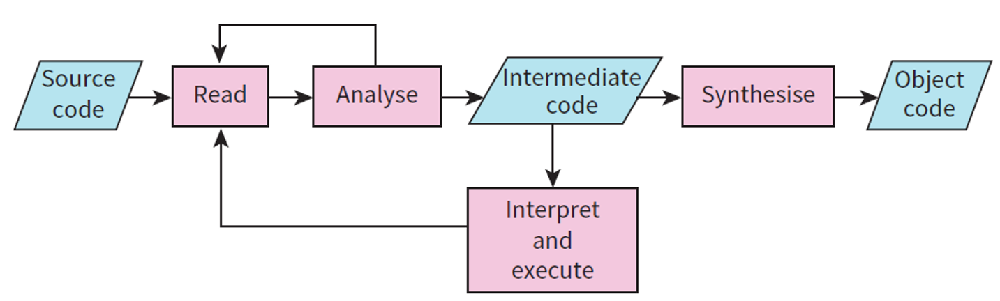
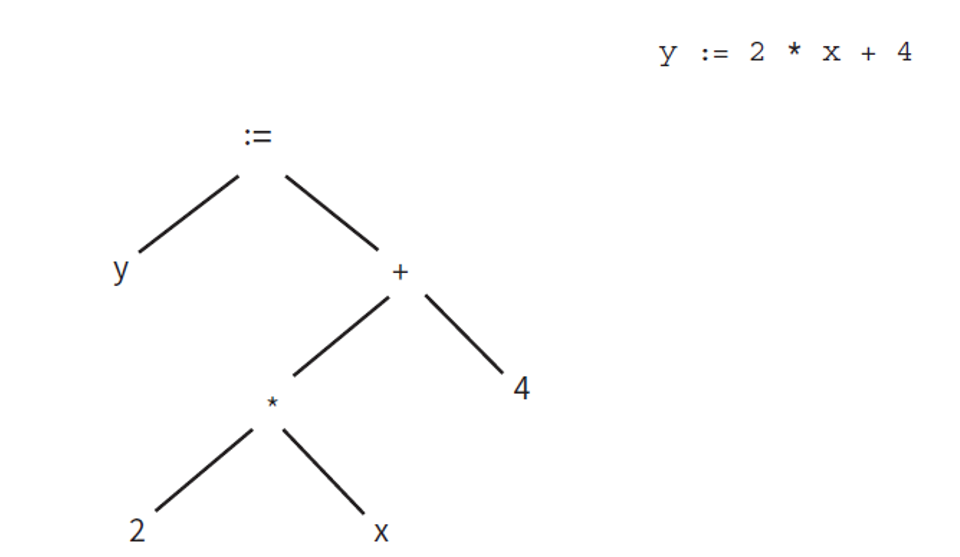
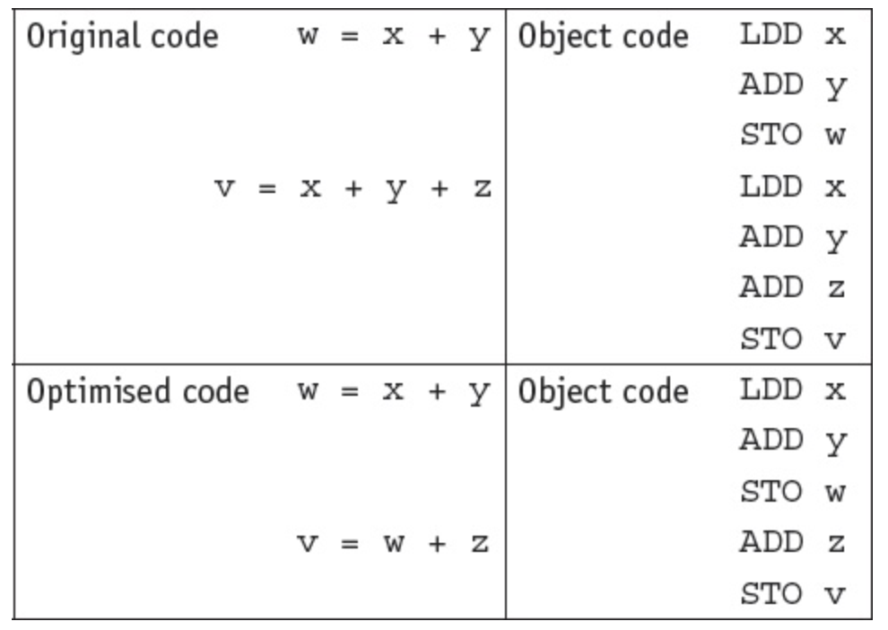
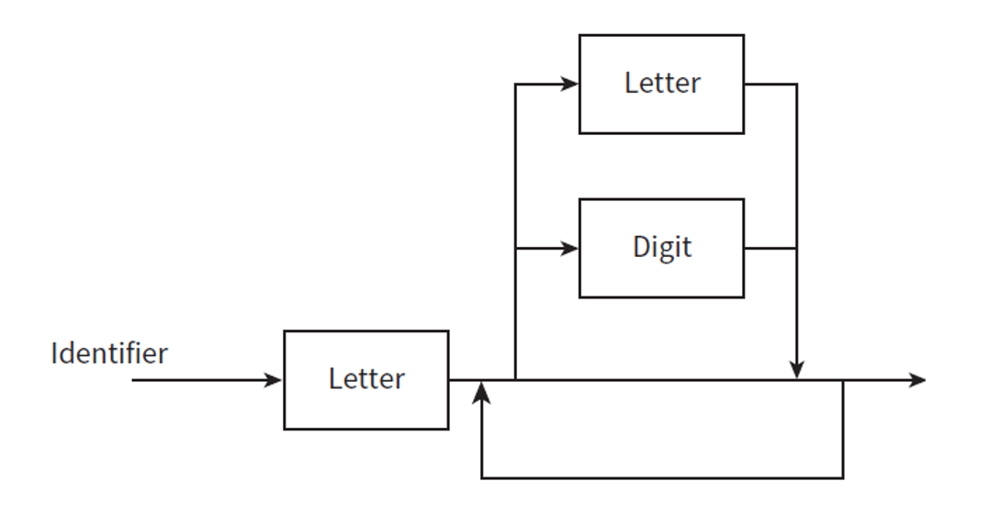

With a compiler the program source code is input and either the object code program or error messages are output. The object code produced can then be executed without needing recompilation.
With an interpreter, No object code is output, but error messages from the interpreter are output, as well as any outputs produced by the program being interpreted. As there is no object code produced from the interpretation process, the interpreter will need to be used every time the program is executed, which making it slower than compilation.
1. How an Interpreter Executes Programs Without Producing a Translated Version
Concept: An interpreter executes the source code directly, translating and running one line at a time without generating a separate translated or executable file.
Advantages:
Immediate execution and feedback during development.
Easier debugging as errors are displayed as soon as they occur.
Disadvantages:
Slower execution due to repeated interpretation.
Requires the source code and interpreter for every execution.
2. Stages in Compilation
A compiler can be described as having a ‘front end’ and a ‘back end’.
The front-end program performs analysis of the source code and, unless errors are found, produces an intermediate code that expresses completely the semantics (the meaning) of the source code.
The backend program then takes this intermediate code as input and performs synthesis of object code.
Compilation process can be illustrated as follows:

2.1 Front-end analysis stages
The four stages of front-end analysis are: lexical analysis, syntax analysis semantic analysis and intermediate code generation:
Lexical Analysis
The compilation stage that groups characters into tokens such as identifiers, keywords, and numbers.
The source code is tokenized, and unnecessary characters like comments are removed.
In order to tokenise the program, the compiler will use a keyword table that contains all the tokens for the reserved words and symbols used in a programming language
For each identifier recognized there must be an entry made in the symbol table. The symbol table contains identifier attributes such as the data type, where it is declared and where it is assigned a value.
==> the output from lexical analysis is a tokenised version of the source code.
Syntax Analysis
The compilation stage that checks whether tokens follow the grammar rules of the language.
Ensures that the code structure follows the language grammar rules.
Syntax analysis, which is also known as parsing, involves analysis of the program constructs.
The results of the analysis are recorded as a syntax or parse tree
Example 1: Input: int x = ; Error: Missing a value for x.
Example 2: syntax tree generation

The rules for parsing can be set out in Syntax Diagrams or in Backus-Naur form (BNF) notation (see section 3 below)
Semantic Analysis
Checks for logical errors, such as type mismatches.
Example: Assigning a string to an integer variable triggers a semantic error.
Intermediate code generation
Produces a simplified, platform-independent representation of the code.
This object program is either in machine code that can be executed by the CPU, or in an intermediate form that is converted to machine code when the program is loaded.
2.2 Back-end synthesis stages
If the front-end analysis has established that there are syntax errors, the only backend process is the presentation of a list of these errors. For each error, there will be an
explanation and the location within the program source code.
In the absence of errors, the main back-end stage is machine code generation from the
intermediate code.
This may involve optimisation of the code. The aim of optimisation is to create an efficient program.
Example 1: Simplifies x = y + 0 into x = y to reduce unnecessary operations
Example 2:
consider these successive assignment statements:
x = (a + b) * (a – b)
y = (a + 2 * b) * (a – b)
More effecient code (optimisation) would be:
temp = (a – b)
x = (a + b) * temp
y = x + temp * b
Example 3:

After code generation and optimisation, additional system-level steps may take place, including linking (combining object code with required libraries) and loading (placing the program into memory so it can be executed).
3. Expressing Language Grammar Using Syntax Diagrams or BNF
The grammatical rules or syntax for a programming language need to be set out clearly so a programmer can write code that obeys the rules, and a compiler can be built to check that a program obeys these rules.
The rules can be shown graphically in a syntax diagram or using a meta language such as Backus-Naur form (BNF) notation
Syntax diagram
Each element in the language has a diagram showing how it is built. Example:
A grammar rule says that an identifier must start with a letter which can be followed by any combination of none or more letters or digits. This can be represented graphically using syntax diagram as follows:

BNF
BNF uses a set of symbols to describe the grammar rules in a programming language.
BNF notation includes:
< >
used to enclose an item
::=
separates an item from its definition
|
between items indicates a choice
;
the end of a rule
For example, a simple variable consisting of a letter (A, B or C) followed by a digit (1, 2, 3)
would be shown as:
A syntax diagram is only used in the context of a language. It has limited use because it
cannot be incorporated into a compiler program as an algorithm. By contrast, BNF is a
general approach which can be used to describe any assembly of data.
4. Reverse Polish Notation
RPN is a method of representing an arithmetical expression without the use of brackets.
RPN uses postfix notation, where an operator is placed after the variables it acts on.
For example, A + B would be written as A B +.
Compilers use RPN because any expression can be processed from left to right without using any back tracking.